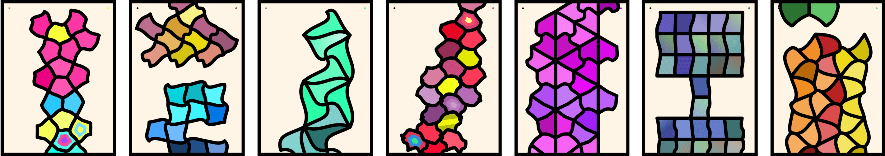
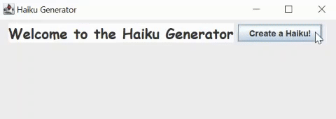

Saralin Zassman
Hi, I'm Saralin! *:ﾟ✧
I'm a software developer with a passion for all things computer science and visual art! Currently, I work as a creative technologist at Antimodular Research, the Montreal-based studio of media artist Rafael Lozano-Hemmer. My role involves both the creation of new interactive artworks and the preservation of existing ones.
Projects
Mindful Scroll (2023)
A mobile application for mindfulness that encourages a slow and deliberate approach to colouring.
Master's thesis, accepted at ACM CHI 2024.
Note: CHI (ACM Conference on Human Factors in Computing Systems), is regarded as the top conference in Human Computer Interaction (HCI), ranking #1 on Google Scholar, with an average acceptance rate of 23%. Conference proceedings are the preferred avenue for publication in the field of HCI.
 Repo
Repo
Speech to Text (2023)
Full-stack react app that converts speech to text using the Web Speech API, and then uses the text to generate a rhyme, poem, haiku and song using the OpenAI API.
Repo
Simple, rule-based chatbot (2021)
Uses Google's DialogFlow for response generation.
Created for a course project (CS 886 - Advanced Topics in Artificial Intelligence), to study the impact of user interface design on the human-chatbot interaction.
Repo
DOM Data (2020)
Uses the Document Object Model of 100 webpages to generate structural priors to improve the vision-based segmentation of web pages.
Completed during my research internship with Dr. Michael Cormier at Mount Allison University.
Repo
Haiku Generator (2020)
Uses Markov chains to generate a large number of sentences from a collection of pre-existing poems. The resulting text undergoes rigorous testing to identify the optimal sequence of words that will be used in the final haiku.
Completed for a course project on computational creativity at the University of Kent.
Repo
Art
 >
>